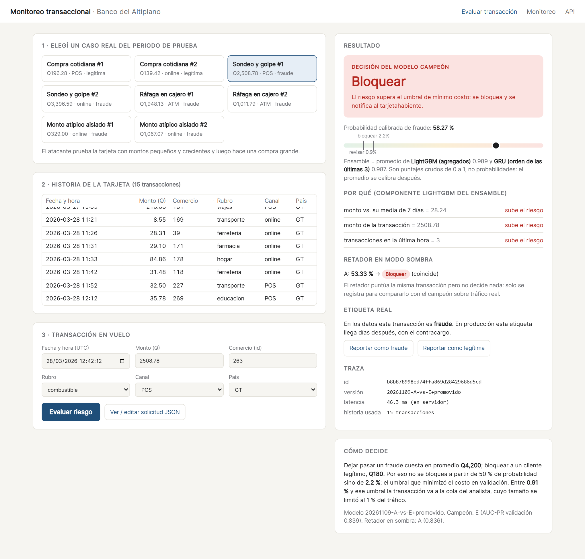
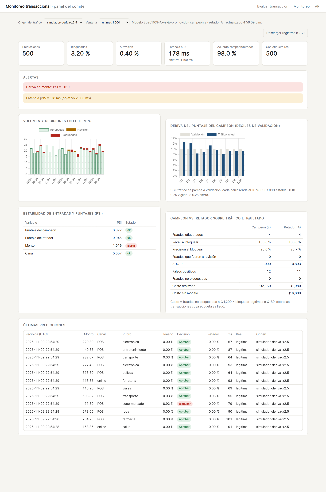

Proyecto final · Deep Learning y Sistemas Inteligentes 2026 · UVG
¿Mantenemos este modelo
en producción?
Monitoreo transaccional · ensamble LightGBM + GRU · Banco del Altiplano
Andrés Mazariegos21749
June Herrera231038
Hansel López19026
Prof. Kevin Recinos · Modelo de origen: Proyecto 1 · noviembre 2026
EN PRODUCCIÓNGOOGLE CLOUD RUN · US-CENTRAL1
§ 01 — ProblemáticaProblema · usuario · decisión
Cada transacción se decide en milisegundos
Dejar pasar un fraude
Q4,200
Bloquear a un cliente legítimo
Q180
23 bloqueos por error = 1 fraude que pasa
Decisión · probabilidad calibrada de fraude
Aprobar
Revisar
Bloquear
0 %0.91 %2.2 %3 %+
automático
analista · ≤ 1 % del tráfico
automático
umbral de mínimo costo = 2.2 % · no 50 %
Autorizador
< 100 ms
p95 por llamada
Analista
¿por qué?
3 motivos SHAP
Comité
¿sigue?
panel /monitor
Monitoreo transaccional · comité de modelos
§ 02 — PlanificaciónEtapas · fechas · responsables
Primero la hipótesis, después el modelo
ETAPA
89101112131415 NOV
QUIÉN
Hipótesis H1 · H2 congeladas
20:26
AM
Reentrenamiento K = 3
JH
API · demo · monitoreo
AM
Pruebas de contrato y paridad
JH
H3 ensamble → decisión
21:41
AMJHHL
Cloud Run · tráfico · evidencias
AMJH
Presentación al comité
AMJHHL
Ajustes · versión final
hasta 15 nov · 23:59
AMJHHL
AMAndrés Mazariegos
JHJune Herrera
HLHansel López
criterio congelado
Monitoreo transaccional · comité de modelos
§ 03 — SupuestosDatos · usuario · entorno
Lo que damos por cierto
Datos
419,821
transacciones sintéticas · generador del P1
1.18 %
de fraude
train → val → test
partición temporal · etiquetas con retraso
Usuario
7 días
de historia por llamada
≤ 1 %
del tráfico cabe en revisión
Q4,200 / Q180
costos promedio fijos
Entorno
CPU
2 vCPU · 2 GiB · sin GPU
1 instancia
Cloud Run · escala a cero
efímero
registro SQLite → exportable a CSV
Datos sintéticos: probamos el sistema de producción, no que el patrón exista así en el banco.
Monitoreo transaccional · comité de modelos
§ 04 — Modelo planteadoOrigen · arquitectura · cambio justificado
Del Proyecto 1, un solo cambio: K de 20 a 3
Curva del P1 · AUC-PR del GRU
Por qué
“Sondeo y golpe” vive en las últimas 3 transacciones; con 20 pasos el GRU aprendía relleno.
mismos datosmismas semillasmismos hiperparámetros
Monitoreo transaccional · comité de modelos
§ 05 — Validación de hipótesisCriterio congelado antes de entrenar · SHA-256
H1 se cumple; H2 y H3 no
H1 · K=3 > K=20Se cumple
criterio: +0.03 y peor semilla > 0.714
+0.032 · peor 0.743
H2 · híbrido ≥ ANo
criterio: media ≥ A − 0.005
−0.051
H3 · E no peor que ANo
criterio: AUC-PR ≥ A y costo ≤ A
+0.0035 · costo +Q11k
AUC-PR, no exactitud: con 1.2 % de fraude, “aprobar todo” acierta 98.8 %
Monitoreo transaccional · comité de modelos
§ 05 — Validación · falsificación¿El Deep Learning aporta algo real?
El GRU sí usa el orden
Prueba de permutación · AUC-PR del GRU (validación)
Desviación entre semillas · GRU
± 0.068
→
± 0.002
K = 20K = 3
Lectura
Barajar la ventana le quita 0.125.
Con K = 3 el resultado ya no depende de la suerte.
Monitoreo transaccional · comité de modelos
§ 05 — Resultado frente a la línea basePrueba · 13.4 días · 62,974 tx · 703 fraudes
Cualquier modelo ahorra ≈ Q6 M al mes
Costo en prueba (Q) · FN × 4,200 + FP × 180
Sin modeloaprobar todo
Q2.95 M
C_K3 · GRU soloAUC-PR 0.789 · recall 94.2 %
Q365 k
E · ensambleAUC-PR 0.853 · recall 97.6 %
Q263 k
A · LightGBMAUC-PR 0.857 · recall 97.7 %
Q261 k
evaluada con modelos, calibradores y umbrales ya congelados en validación
Ahorro / mes · E
Q6.01 M
Ahorro / mes · A
Q6.02 M
Fraudes detenidos
97.6 %
Monitoreo transaccional · comité de modelos
§ 05 — Decisión de produccióndocs/DECISION.md
Regla: LightGBM. Negocio: el ensamble.
Regla congelada · H3
A decide
E ordena mejor, cuesta más en su umbral
→
Decisión de negocio · declarada
E decide
el Deep Learning participa en cada decisión
Precio de la decisión · ahorro mensual del ensamble = Q6.01 M
ahorro que se conserva · 99.92 %
PROMOVER_RETADOR=1reversible · sin reentrenarA en sombra
+ Q4,560 / mes
= 0.08 % del ahorro
Monitoreo transaccional · comité de modelos
§ 06 — Herramientas y arquitecturaDatos · entrenamiento · servicio · monitoreo
Datos → entrenamiento → servicio → monitoreo
1 · Datos
Generador del P1semilla 20260831
419,821 tx4,000 tarjetas · 90 días
Partición temporaltrain / val / test
→
2 · Entrenamiento
Features del P1agregados + ventana K=3
LightGBM ×3 · GRU ×3Keras 3 (torch) · CPU
Calibración + u*en validación
Artefactos+ SHA-256 de hipótesis
→
3 · Servicio
Docker · Cloud Run2 vCPU · 2 GiB
FastAPI · POST /predecirPydantic · Uvicorn ×2
E decidecampeón
A sombraretador
SQLitepredicción + etiqueta
→
4 · Monitoreo
GET /metricasventana móvil
PSI · p95 · costo realcampeón vs. retador
/monitorpanel del comité
Autorizador → transacción + 7 días → /predecir
Contracargos → /retroalimentacion
0 features reimplementadas
Monitoreo transaccional · comité de modelos
§ 07 — Evidencias · enlace al servicioGoogle Cloud Run · us-central1
Cualquiera puede usarlo hoy
Servicio
monitoreo-transaccional-
837352528666.us-central1
.run.app
837352528666.us-central1
.run.app
/
demo del analista
/monitor
panel del comité
/docs
API · OpenAPI
/registros.csv
registros de uso
Bloquear · 58 %GRU 0.987LightGBM 0.989

“sondeo y golpe” real del periodo de prueba · decisión, motivos y retador
Monitoreo transaccional · comité de modelos
§ 07 — Evidencias · pruebasRepositorio reproducible · pytest
Producción decide igual que el entrenamiento
Pruebas automáticas
76 / 76
contrato de la API · 422 en entradas inválidas · PSI · features del P1
Paridad servicio ↔ entrenamiento
Δ < 10⁻⁵
40 tx reales · 15 fraudes
atrapó 1 bug antes de desplegar
atrapó 1 bug antes de desplegar
Mismas 2,000 tx · decisiones
Local
Cloud Run
1,902 · 21 · 77 = idénticas
Repositorio reproducible · de cero a servicio
1
pip install -r requirements.txt
2python -m pytest
3python -m entrenamiento.entrenar
4docker build -t monitoreo .
versiones fijadas · mismo dataset con la misma semilla · README = documento técnico
Monitoreo transaccional · comité de modelos
§ 07 — Evidencias · registros de usoCorrida contra la URL pública · 9 nov
2,500 transacciones reales, 0 errores
Latencia en servidor (ms) · p50 / p95
Costo realizado · 2,000 tx · 43 fraudes
Sin modelo
Q180,600
E · decide
Q6,120
A · sombra
Q6,300
recall 100 % · ambos43 fraudes: aún no significativo
Limitación declarada
p95 > 100 ms con 4 clientes: GIL + keep-alive por worker
Monitoreo transaccional · comité de modelos
§ 07 — Evidencias · monitoreoPSI contra validación · montos ×2.5
Cambian las entradas, no el modelo
PSI · tráfico normal vs. deriva simulada

Alerta de entrada ≠ modelo roto: usa montos relativos a la tarjeta.
Monitoreo transaccional · comité de modelos
Recomendación al comitéMantener · vigilar · revertir
Mantener el ensamble, con A en sombra
Mantener
E decide · ahorra ≈ Q6 M / mes · GRU en cada decisión
Revisar
cada semana · costo real de E vs. A en /monitor
Volver a A
si con ≥ 200 fraudes A sigue más barato · 1 línea del Dockerfile
Reentrenar
PSI puntaje > 0.25 · bloqueo > 3× · recall < 90 %
Riesgos que no escondemos
datos sintéticosp95 > 100 msregistro efímerosin autenticaciónumbral optimista
Monitoreo transaccional · comité de modelos
Gracias
¿Preguntas?
serviciomonitoreo-transaccional-837352528666.us-central1.run.app
repositoriogithub.com/andresm220/proyecto-final-dl
Andrés Mazariegos · June Herrera · Hansel López